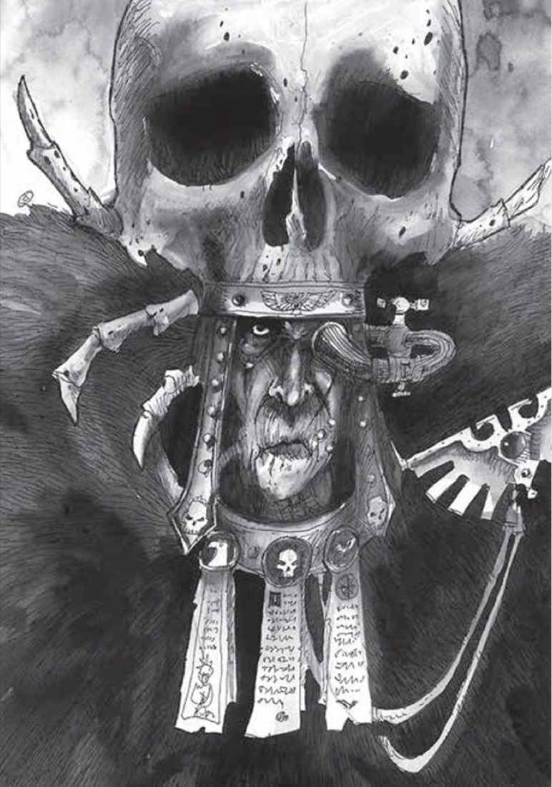

High Lords of Terra
| High Lords of Terra Senatorum Imperialis | |
|---|---|
 Study of a High Lord of Terra in the ceremonial skull-crown of the Senatorum | |
| Type | Executive and legislative council |
| Formal style | Lords Temporal, Martial and Ecclesiarchical of the Most Divine and Righteous Imperium of Mankind |
| Also called | The High Twelve |
| History | |
| Forerunners | Council of Terra (798.M30–014.M31); Grand Council of Reconstruction (014.M31) |
| Established | Before the middle of M32[a] |
| Reformed | c. 999.M41 onward, by Roboute Guilliman |
| Leadership | |
| Chair | Lord Commander of the Imperium and Imperial Regent Roboute Guilliman (since c. 999.M41) |
| Administrator | Chancellor of the Imperial Council |
| Structure | |
| Seats | 12 9 permanent, 3 rotating |
| Meeting place | Imperial Palace, Terra |
| Answers to | The Emperor of Mankind, in theory |
The High Lords of Terra, also called the High Twelve and known in High Gothic as the Senatorum Imperialis, are the supreme governing council of the Imperium of Mankind. The council is composed of the highest officials of the principal institutions of the Imperium, among them the Administratum, the Adeptus Mechanicus, the Ecclesiarchy and the Inquisition, and it sits in the Imperial Palace on Terra. Its stated purpose is to interpret the will of the Emperor of Mankind, who has been unable to speak since his interment upon the Golden Throne, and to carry that will into effect across a million worlds.[1]
The council descends from the Council of Terra, the civil body that the Emperor created at the close of the Great Crusade, and through it from the bureaucrats who followed his armies in the Unification Wars. After the Horus Heresy a Grand Council of Reconstruction governed the ruined Imperium under the chairmanship of the primarch Roboute Guilliman, and from it the Senatorum Imperialis took shape. In the 32nd millennium it was nearly destroyed by the Beheading, in the 36th it was dissolved by a usurper, and at the end of the 41st it was dissolved again, by Guilliman himself, and rebuilt in his image. It remains the body in whose name every Imperial edict is issued.[1][2][3]
Authority within the Senatorum is shared between twelve officials who are, with few exceptions, rivals. Each leads an institution with its own territory, armies, revenues and doctrines, and the council is therefore as much a negotiation between the great adepta as a government. Its decisions bind the Imperium only so far as the governors, Sector lords and commanders who receive them choose to obey.[1] The Adeptus Astartes hold no seat by tradition, a custom attributed to the belief that the Space Marines exist to protect humanity and not to rule it.[4]
Origins
[edit]Unification Wars
[edit]The first officials of the Emperor's new order were civil servants who accompanied his armies during the Unification Wars on Terra, at the end of the 30th millennium. Their task was to build a working administration upon the ruins of the warlord states that his Thunder Warriors had overthrown. Imperial records call them the Magisters Temporal. As the Emperor's realm grew they were reorganised into the Lords Civilian, and the four greatest of these were known as the High Lords Civilian. At the time the First Legion was brought into the field late in the wars they were Pelops Dravagor, Chancellor of the Estate Imperium; Uwoma Kandawire, Grand Provost Marshal; Noum Retraiva, Master of the Administratum; and Kli-San Weia, Lord Commander Militant of the Imperial armies.[2]
War Council
[edit]When the Great Crusade began, in about 798.M30, the Emperor convened a War Council to direct the reconquest of the galaxy. He sat at its head, with Malcador the Sigillite at his left hand, and the council also included the Fabricator-General of Mars, the Paternova of the Navigator houses and, as the crusade proceeded, the primarchs as they were found. When the Emperor left Terra to lead the crusade in person, he left Malcador behind as Regent of Terra.[2][5]
Council of Terra
After the Triumph at Ullanor, with the reconquest of the galaxy no longer in doubt, the Emperor named Horus Warmaster and gave him command of the crusade. He then withdrew to Terra to complete his work beneath the Imperial Palace, and at the same time he decided that the Imperium could no longer be governed by him and a council of his sons alone. He created the Council of Terra to take over the civil business of the Imperium: tithes, trade, justice, resettlement and the thousand daily tasks of a realm of a million worlds. The Council was a civilian body, closed by design to the primarchs. The Emperor intended that unaugmented humans should learn to govern themselves without the guidance of beings such as himself and his sons.[6][2]
The decision was unpopular among the Emperor's sons. Several of them regarded the Council as a body of lesser men placed over them, and the loss of their voice in the government of the empire they had conquered was among the grievances that agents of the Chaos Gods later exploited.[7] The Council sat until the end of the Heresy. Its members at the time of the war included the Regent Malcador, the Captain-General of the Adeptus Custodes Constantin Valdor, the Master of the Administratum Simion Pentasian, the Grand Provost Marshal Harr Rantal, the Choirmaster of the Adeptus Astra Telepathica Nemo Zhi-Meng, the Master of the Astronomican Cohran Hursula, the Paternoval Envoy Bolam Haardiker and the Chancellor of the Estate Imperium Ossian. Zagreus Kane joined as Fabricator-General of the loyalist Mechanicum after the Schism of Mars began, in 006.M31, and in 012.M31 became the first Fabricator-General of the reformed Adeptus Mechanicus and its first High Lord.[2][7]

History
[edit]Grand Council of Reconstruction
[edit]The Heresy left the Imperium without its Emperor, its Warmaster, its Regent and half its Legions. In 014.M31, as the Siege of Terra ended, a Grand Council of Reconstruction took charge. Its members included the surviving loyalist primarchs Roboute Guilliman, Rogal Dorn, Leman Russ, Lion El'Jonson, Jaghatai Khan and Vulkan, Captain-General Valdor, the First Captain Raldoron for the Blood Angels, and the principal mortal officials of the Council of Terra. It directed the opening campaigns of the Great Scouring. The mortal members, wary of any repetition of the Heresy, gained considerable weight against the primarchs, who had dominated Imperial politics until then.[2][7]
Dorn, who as Praetorian of Terra had ruled the Palace and the homeworld under martial law throughout the siege, found it hard to debate his decisions with mortal officials. Guilliman, by contrast, held that the Imperium had been made for the unaugmented majority of mankind and must in the end answer to it. He took the chair as Lord Commander of the Imperium, the supreme commander of all Imperial armed forces, and as Imperial Regent. The title of Warmaster was abandoned, for reasons that required no explanation. The reforms that followed divided the Legions into Chapters by the Codex Astartes, separated the Imperial Navy from the army and prised provincial authority apart so that no one commander held ships, soldiers and territory together.[4] The council that grew from the Grand Council was shaped by the same principle.
Formation of the Senatorum
[edit]It is not recorded when the Grand Council was abolished. By the middle of the 32nd millennium the Senatorum Imperialis, twelve mortal High Lords with supreme power over the Imperium, was fully established. The older Imperial tradition held that Guilliman founded it in a single act. Later records do not support so tidy a story.[2] Guilliman held the chair until he was grievously wounded by his brother Fulgrim and placed in stasis on Macragge, and the office of Lord Commander lay largely vacant for millennia afterward.[4]
The Ecclesiarchy entered the council in the same period. The Temple of the Saviour Emperor was recognised as the state religion in the early 32nd millennium and became the Adeptus Ministorum. Within a few centuries the Ecclesiarch Veneris II was granted a seat among the High Lords, which was made permanent three centuries later.[8] Imperial accounts differ on the exact order of these events.
War of the Beast and the Beheading
[edit]The first full roll of the council as it is known today is the one that sat in 544.M32, at the outset of the War of the Beast. The Lord Commander of the Imperium was Udin Macht Udo. The most powerful member was the Lord High Admiral Lansung. The Ecclesiarch was Erekart Mesring, of the newly established state church, and the Grand Master of Assassins was Drakan Vangorich, who had officially lost his seat to the Inquisitorial Representative but still attended every session.[9]
The council was destroyed in the war. In the event called the Beheading, the High Lords were killed by assassination on the orders of a Grand Master of the Officio Assassinorum whom they had slighted. The Chapter Master of the Imperial Fists, Koorland, deposed Udo and took the title of Lord Commander of the Imperium. When Koorland fell during the second assault on Ullanor, he was succeeded by Maximus Thane, Chapter Master of the Fists Exemplar and later of the reconstituted Imperial Fists. These two are the only recorded occasions on which Space Marine commanders have chaired the council. After the war the council was rebuilt and the Third Founding of new Chapters was ordered.[9][2]
Nova Terra Interregnum
[edit]In the 35th millennium a rival administration on Nova Terra claimed the western reaches of the Imperium, and for centuries the Imperium had two competing governments. The Senatorum on Terra eventually restored its authority, but its legitimacy was damaged.[2]
Age of Apostasy
[edit]In the 36th millennium the High Lord Goge Vandire, the 361st Master of the Administratum, seized the office of Ecclesiarch as well and thereby held the two greatest bureaucracies of the Imperium. The result was the Reign of Blood, and the High Lords were unable to resist him. When the Fabricator-General Gastaph Hediatrix demanded that the council account for itself and that Vandire be tried, Vandire dissolved the Senatorum Imperialis and declared both the Adeptus Astartes and the Adeptus Mechanicus traitors to the Imperium. He was killed by his own bodyguard, the Brides of the Emperor, after the reformer Sebastian Thor led an army against Terra.[8][10]
The council was restored after his death. Its reconstruction included the creation of the Ordo Hereticus within the Inquisition and further checks on the power of any one official, so that no individual could again hold more than one of the great offices.[8]
Era Indomitus
[edit]At the close of the 41st millennium the resurrected Guilliman returned to Terra, spoke with the Emperor in the Throne Room, and resumed the offices of Lord Commander of the Imperium and Imperial Regent. His first act was to dissolve the sitting Senatorum Imperialis and to rule in person, as Lord Commander and as Lord Militant of the council. When he judged that he needed finer control of the bureaucracy he restored the High Twelve with himself as chair. By then he had replaced five High Lords and hundreds of lesser lords, and had founded two new institutions: the Officio Logisticarum, called Guilliman's Hand, which supplied the Indomitus Crusade by passing over the Administratum, and the Logos Historica Verita, which sought an accurate history of mankind. His general purge of the Imperial bureaucracy is remembered as the Primarch's Scourge.[3][11]
Many High Lords resisted him, among them the supporters of what the Terran nobility called the Imperium Eterna, the order that had stood before the primarch's return. This resistance culminated in the Hexarchy, a conspiracy of serving and deposed High Lords led by the former Master of the Administratum Irthu Haemotalion and the deposed Ecclesiarch Baldo Slyst. While Guilliman was away leading the Indomitus Crusade they attempted to seize Terra, and summoned the Minotaurs Chapter to the Throneworld by telling it that the heart of the Imperium was under siege from within. The coup failed when the Grand Master of Assassins, Fadix, broke it. Three of the conspirators who still held seats, the Grand Provost Marshal Aveliza Drachmar, the Lord Commander Militant Mar Av Ashariel and the Lord High Admiral Merelda Pereth, were killed in the fighting.[3]
Composition
[edit]
The council has twelve seats. Nine are held permanently by the heads of the oldest and most powerful institutions of the Imperium, and three are filled by rotation from among a larger group of commanders and officials. Imperial sources do not agree on the exact list, and the composition has varied in every century of the council's existence; the tables below give the arrangement most often cited by Administratum archivists.[1]
Permanent seats
[edit]| Office | Institution | Notes |
|---|---|---|
| Master of the Administratum | Administratum | Head of the Imperial bureaucracy and, in practice, the most politically powerful of the High Lords. Malcador the Sigillite is regarded as the first holder of the office. |
| Inquisitorial Representative | Inquisition | Not a fixed person. The seat is held by whichever Inquisitor the Inquisition sends to a given session. |
| Ecclesiarch | Adeptus Ministorum | Head of the Ecclesiarchy. Admitted to the council in the 32nd millennium and permanent thereafter. |
| Fabricator-General | Adeptus Mechanicus | Ruler of Mars. The office has held a seat since the first Fabricator-General of the reformed Adeptus Mechanicus, in 012.M31, and is protected by the Treaty of Olympus. |
| Grand Provost Marshal | Adeptus Arbites | Head of the enforcers of Imperial law. |
| Paternoval Envoy | Navis Nobilite | Speaks for the Paternova of the Navigator houses, who may not leave the Palace of Navigators. The Paternova is traditionally chosen from among the weaker houses, so that no powerful house may command all Navigators. |
| Master of the Astronomican | Adeptus Astronomica | Keeper of the Astronomican and its attendants. |
| Grand Master of Assassins | Officio Assassinorum | Head of the Imperium's assassin temples. Its power is feared by the other High Lords, and with reason. |
| Master of the Adeptus Astra Telepathica | Adeptus Astra Telepathica | Head of the Astropath choirs and of the Black Ships that gather psykers from Imperial worlds. |
These seats are close to sacrosanct. The sitting High Lords devote great effort to securing continuity, using promises, inducements and, on occasion, assassination to ensure that their offices are inherited by those they choose.[1]
Rotating seats
[edit]The remaining three seats are filled, at the pleasure of the council, from among the following:
| Office | Institution |
|---|---|
| Lord Commander Militant | Astra Militarum |
| Lord High Admiral | Imperial Navy |
| Lord Commander of the Segmentum Solar | Solar territorial command |
| Cardinals of the Holy Synod of Terra | Ecclesiarchy |
| Abbess Sanctorum | Adepta Sororitas |
| Captain-General | Adeptus Custodes |
| Chancellor of the Estate Imperium | Estate Imperium, the records office of the Administratum |
| Speaker for the Chartist Captains | Merchant fleets and Chartist Captains |
| Lord Constable of the Synopticon | Imperial Palace archives and watch |
Other sources place the Lord Commander Militant, the Lord High Admiral and the Grand Provost Marshal among the most regular members of the council, which reflects the importance that the High Lords attach to their armies, their fleets and the law that binds their worlds.[1]
The reconstituted council
[edit]The roll of the council as Guilliman first restored it in the Indomitus Crusade, before the Hexarchy's coup, is the best recorded of any age. It shows how far he changed its character: the Captain-General of the Adeptus Custodes, who had never been a regular member, sat beside the Lord Commander, and the Adepta Sororitas had a voice through the Abbess.[3]
| Office | Holder |
|---|---|
| Lord Commander of the Imperium, Imperial Regent | Roboute Guilliman |
| Captain-General of the Adeptus Custodes | Trajann Valoris |
| Master of the Administratum | Violeta Roskavler |
| Master of the Astronomican | Lucius Throde |
| Master of the Adeptus Astra Telepathica | Zlatad Aph Kerapliades |
| Ecclesiarch | Eos Ritira |
| Inquisitorial Representative | Kleopatra Arx |
| Paternoval Envoy | Kadak Mir |
| Fabricator-General and High Priest of the Cult Mechanicus | Xasandera Valdet |
| Grand Provost Marshal | Aveliza Drachmar (slain in the Hexarchy's coup) |
| Lord Commander Militant | Mar Av Ashariel (slain in the Hexarchy's coup) |
| Lord High Admiral | Merelda Pereth (slain in the Hexarchy's coup) |
| Grand Master of Assassins | Fadix |
| Abbess of the Adepta Sororitas | Morvenn Vahl |
The Lord Commander Solar Arcadian Leontus of the Astra Militarum is also recorded among the High Lords of the later Era Indomitus.[3]
Lesser High Lords
[edit]The day-to-day running of the council is managed by the Chancellor of the Imperial Council, a senior bureaucrat who is not counted among the High Twelve but who, because of his control over agendas and records, wields considerable influence. Various other officials have at times been treated as full members, including the Commandant of the Schola Progenium, the Lord Constable of the Synopticon, the Mistress Plenary of the Catacombs, the Consul Pre-Eminent of the Navis Nobilite, the Chirurgeon-General of the Orders Hospitaller and the High Lord of the Imperial Chancellery. Hundreds of nobles of Terra hold the title of lesser high lord by courtesy and sit on no council.[2][3]
The absence of the Adeptus Astartes
[edit]Space Marine commanders have almost never held a seat. Imperial scholars ascribe this to Guilliman, who as author of the Codex Astartes held that the Chapters exist to serve humanity and not to govern it, and who followed the Emperor's own example in keeping the Council of Terra and the War Council apart. The sole exception is the brief chairmanship of the two Imperial Fists Chapter Masters during the War of the Beast.[4]
Powers and procedure
[edit]Authority
[edit]The Senatorum is in theory the executive of an absolute monarchy. Its members hold that the Emperor's will is known to them and that he therefore rules through them. On their order the fleets and armies of the Imperium move; they alone can approve the Founding of a new Space Marine Chapter; and their instructions send the Black Ships to the worlds of the Imperium to collect the psykers that each world owes. After the Fall of Cadia they decreed that every Forge World was to increase production by any means necessary.[1][12]
The council has no army and no navy of its own. It must act through the institutions that its members lead, and the distance between a command issued on Terra and its execution on a distant world may be measured in years. A command that is inconvenient to a regional power may be quietly lost in the machinery of the Administratum.[1]
Protection and removal
[edit]The High Lords are protected by the Adeptus Custodes. Even so, the history of the council records many disappearances, deaths and unexplained resignations. The Inquisition has been asked to look into several such cases, though it has been suggested that some High Lords disappeared because of the Inquisition.[2] Guilliman's removal of five High Lords after his return is regarded by his critics as a grave breach of precedent.[3]
Relations with other bodies
[edit]- The Emperor
- The council issues its edicts in the Emperor's name and holds that his will is known to it. The Adeptus Custodes allow no High Lord to approach the Golden Throne without leave.
- Adeptus Terra
- The council directs the Adeptus Terra, the group of institutions on Terra that includes the Administratum, the Adeptus Arbites and the Adeptus Astra Telepathica. It does not direct the Mechanicus, which is autonomous by treaty, or the Inquisition, which answers to no one.
- Adeptus Astartes
- The council cannot command a Chapter. It may request service and, when a Chapter's loyalty is in doubt, may ask the Inquisition to investigate. The Space Marines treat the Lord Commander as their sole legitimate superior.
- Planetary governors
- Governors are confirmed by the council and owe the Imperium its tithe, its troops and its psykers. In practice governors are rarely in contact with Terra and are rarely corrected.
Criticism and analysis
[edit]The Senatorum has been the target of criticism since its founding. The Ecclesiarchy has accused it of heresy and indifference; the Mechanicus considers it ignorant; the Inquisition treats it as a suspect; and planetary governors regard it as an unreachable and unreasonable creditor. Many Imperial scholars describe the council as a body whose chief function was to prevent anything from happening.[2] The council had the power to stop an order but not to compel one, and the resulting deadlock was held to be an advantage in the age of its founding, when the danger it was designed to guard against was a single commander seizing the whole Imperium.
The reforms of Guilliman since 999.M41 have altered this balance. His supporters point to the speed with which the Indomitus Crusade was raised and equipped and to the end of long administrative paralysis. His critics, among them members of the council itself, hold that the Imperium has returned to rule by one will, which was precisely what the council was created to prevent. The believers in the Imperium Eterna cite the Emperor's own intention that mortals should govern themselves, and the Emperor is recorded as having made the same criticism of Guilliman's rule in the Throne Room.[3]
See also
[edit]Notes
[edit]- ^ Older Imperial tradition credits Roboute Guilliman with founding the Senatorum himself. The accepted account, set out in the records assembled after the Siege of Terra, holds that it grew out of the Grand Council of Reconstruction over several centuries, with Guilliman as its first chair.
References
[edit]- ^ a b c d e f g h Codex Imperialis (rev. 980.M41). Adeptus Terra.
- ^ a b c d e f g h i j k l Lexicanum Martialis. Officio Militaris.
- ^ a b c d e f g h Records of the Indomitus Crusade (ongoing). Office of the Lord Commander.
- ^ a b c d Guilliman, Roboute (c. 019.M31). Codex Astartes. Macragge.
- ^ Sindermann, Kyril (c. 004.M31). Remembrances of the 63rd Expedition. Remembrancer Order.
- ^ Oliton, Mersadie (c. 005.M31). Chronicles of the Luna Wolves. Remembrancer Order.
- ^ a b c Chronicles of the Heresy (sealed). Logos Historica Verita, Terra.
- ^ a b c Liber Ecclesiasticus (M37). Adeptus Ministorum.
- ^ a b Records of the War of the Beast (M32). Officio Militaris, Terra.
- ^ Liber Primarchus (M32, revised M41). Administratum Archive, Terra.
- ^ Logos Historica Verita: Founding Charter (c. 001.M42). Office of the Lord Commander.
- ^ Records of the Fall of Cadia (999.M41). Adeptus Administratum.